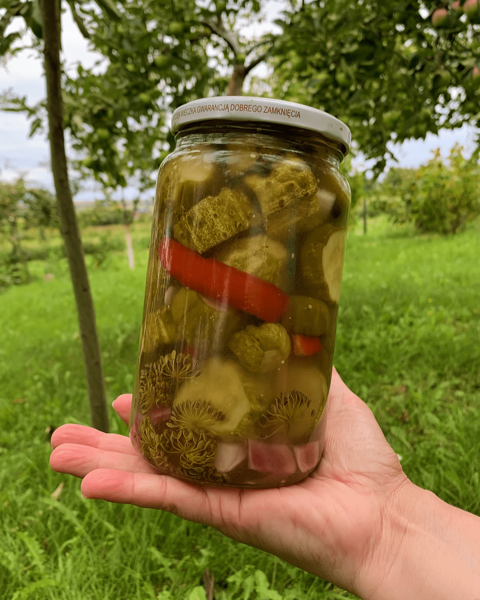

Солодкі огірки кусочками
Цікавий смак

Інгредієнти
- орієнтовно 5 літрових банок
- 4 кілограми огірків
- 4 болгарських перців
- пів кілограма цибулі
- 250 грам солі
- 2.25 літри води
- 750 мілілітрів води
- 1 кілограм цукру
- 1 чайна ложка гірчиці порошком
- 1 чайна ложка духм'яного перцю
- до кожної банки 250 мілілітрів олії
- по бажнанню до кожної банки гілочку кропу
Спосіб приготування
- Огірки, болгарські перці та цибулю порізати кружельцями
- розчинити сіль у 1.5 л. води
- взяти велику пластмасову, скляну ємність (не алюмінієву)
- засипати огірки, перець, цибулю (все кружельцями) та залити сумішшю води та солі
- залишити на 3 години, час від часу перемішуючи
- в каструлю залити оцет, 750 мілілітрів води, цукор, гірчицю порошком та духм'яний перець
- гріти та розмішувати до розчинення цукру
- після 3 годин огірки цибулю та перець щільно розкласти по банках (без рідини, в якій вони знаходилися)
- до кожної банки долити 250 мілілітрів олії
- рівномірно залити маринадом
- стерилізувати 10-15 хвилин (до пожовтіння)
- споживати бажано через місяць, щоб огірки набрали смаку